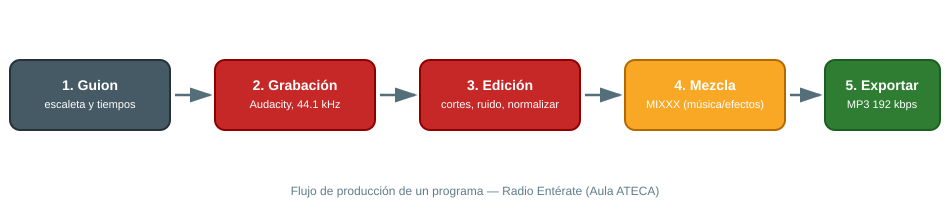

📻 Radio y Audio
El Aula ATECA da soporte a Radio Entérate, la emisora escolar del CIFP Villa de Agüimes, donde el alumnado produce programas educativos y divulgativos. Este manual cubre el flujo de trabajo de grabación/edición y las herramientas disponibles.
1. Radio Entérate (emisora escolar)
Proyecto de radio educativa gestionado por alumnado y profesorado del centro, orientado a desarrollar creatividad, comunicación oral y trabajo en equipo.
1.1 Flujo de trabajo de un programa

{ width="800" }- Guion: se prepara escaleta con bloques, tiempos y locutores. Reparte turnos de palabra por escrito para evitar solapamientos en la grabación.
- Grabación: en el aula, con micrófono conectado al PC y Audacity abierto en una pista estéreo a 44.1 kHz. Haz una prueba de 10 segundos antes de grabar el programa completo para comprobar niveles.
- Edición: cortes, ecualización básica, eliminación de ruido de fondo y normalización de volumen en Audacity.
- Música/efectos: mezcla de cortinillas y música con MIXXX si el programa incluye tramos musicales en directo o pregrabados tipo DJ set.
- Exportación: MP3 a 192 kbps (buen equilibrio calidad/peso) para publicación o retransmisión.
1.2 Buenas prácticas
- Graba siempre con auriculares puestos para detectar ruidos en directo (soplidos, sillas, móviles).
- Deja 2-3 segundos de silencio al inicio y final de cada grabación (margen para edición).
- Guarda el proyecto de Audacity (
.aup3) además del MP3 exportado, por si hay que retocar algo más adelante. - Archiva cada programa con un nombre consistente:
AAAAMMDD-titulo-programa.mp3, para poder encontrarlo fácilmente en el histórico de la emisora.
2. Audacity — edición de audio
Software libre y gratuito, estándar de facto en educación para grabación y edición de audio multipista.
2.1 Configuración básica
- En Editar → Preferencias → Dispositivos, selecciona el micrófono del aula como entrada y los altavoces/auriculares como salida.
- Ajusta el proyecto a 44.1 kHz / estéreo (o mono si es solo voz, para reducir peso de archivo).
- Usa Efectos → Reducción de ruido: primero capturas una muestra de "solo ruido" (2-3 segundos de silencio) y luego aplicas la reducción al resto de la pista.
- Efectos → Normalizar al final para igualar volúmenes entre distintos locutores/tomas.
2.2 Atajos útiles
| Acción | Atajo |
|---|---|
| Grabar | R |
| Reproducir/Pausar | Espacio |
| Cortar silencio seleccionado | Ctrl + L |
| Deshacer | Ctrl + Z |
| Exportar como MP3 | Archivo → Exportar → Exportar como MP3 |
3. MIXXX — software para DJs
Herramienta libre para mezclar música en directo (crossfader, control de BPM, cue points), útil para separadores musicales del programa o proyectos de eventos del centro.
3.1 Uso básico
- Carga las pistas en los dos decks (izquierda/derecha).
- Sincroniza el BPM con el botón Sync antes de mezclar.
- Usa el crossfader central para transicionar de una pista a otra.
- Marca cue points (puntos de entrada) en los estribillos o momentos clave para no tener que buscar manualmente en directo.
📚 Recursos
- 📖 Manual de Audacity (español){target="_blank"}
- 🌐 Audacity{target="_blank"}
- 🌐 MIXXX{target="_blank"}
- 🌐 Web del Aula ATECA (fuente de este manual): Tecnologías | Aula AtecA{target="_blank"}
📷 Pendiente: añadir fotos reales del set de radio del aula (mesa de mezclas, micrófonos, cabina) y una captura de un proyecto de Audacity ya editado.